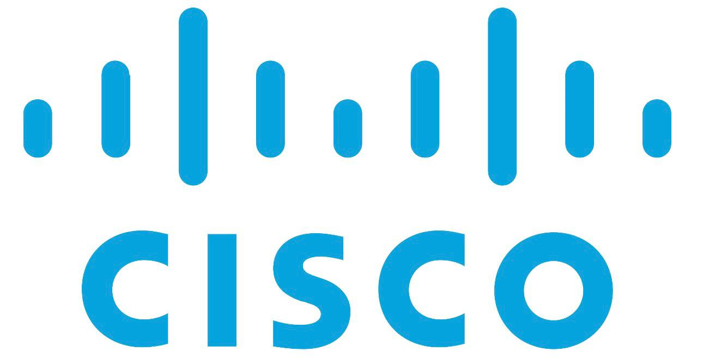
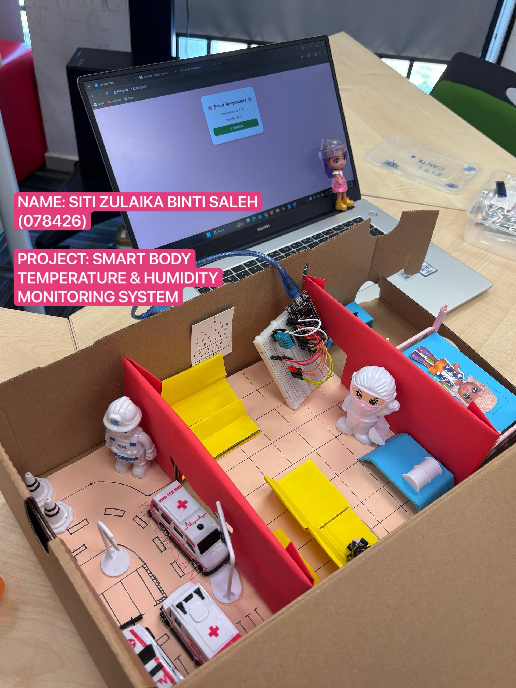
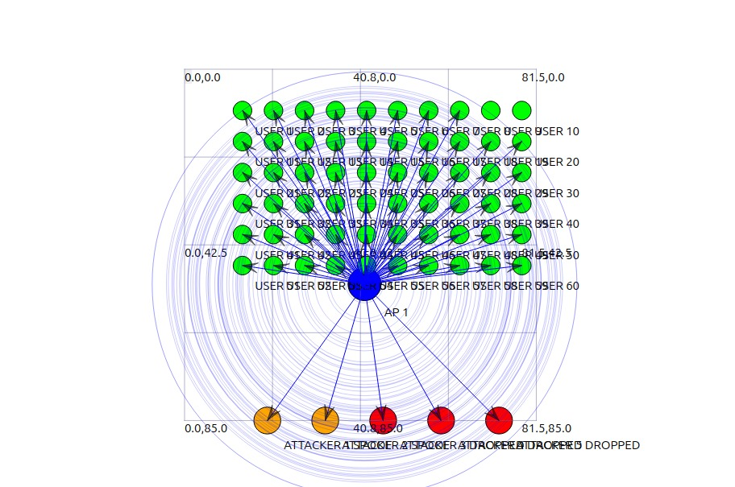
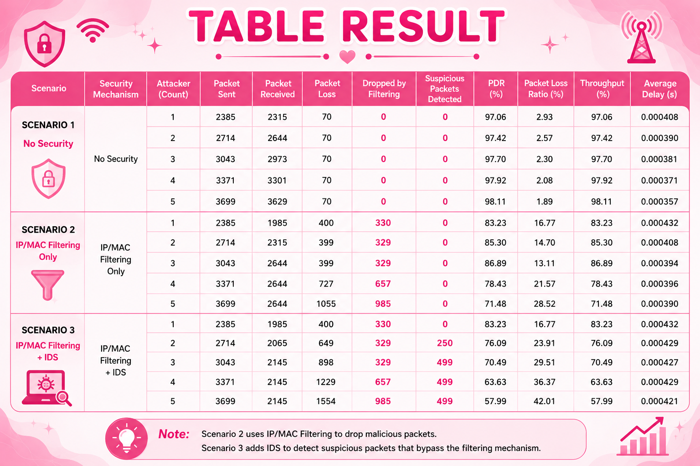
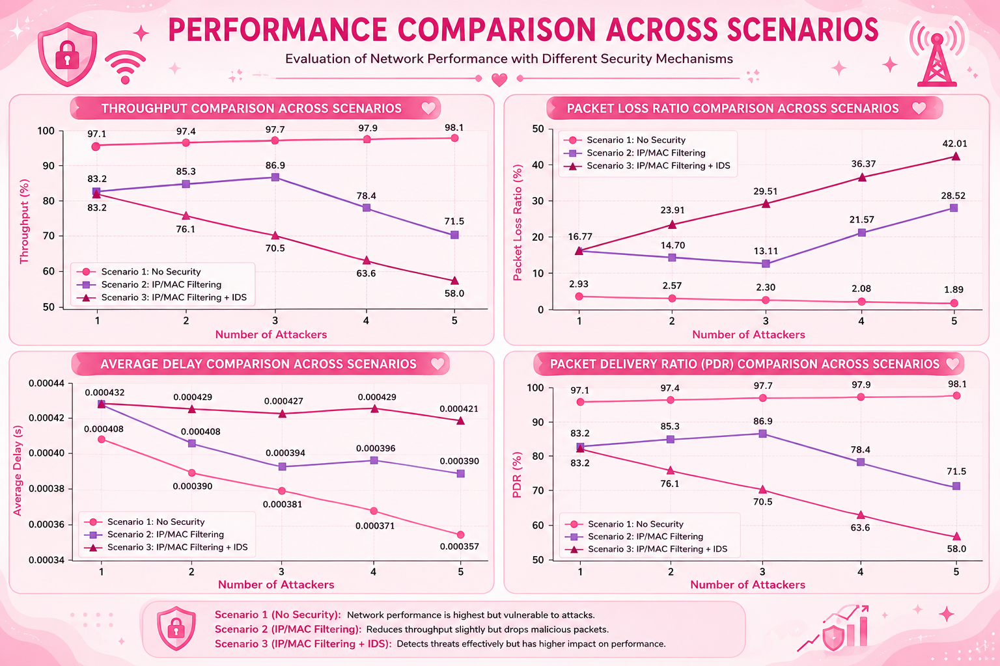
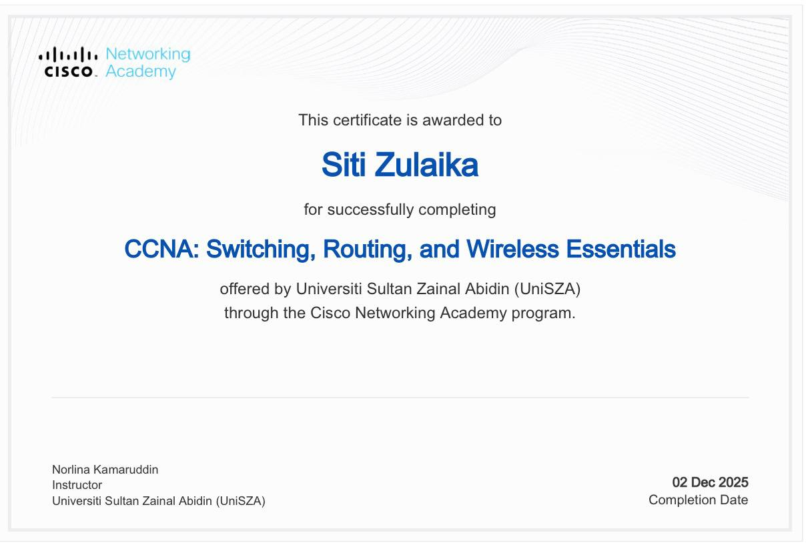
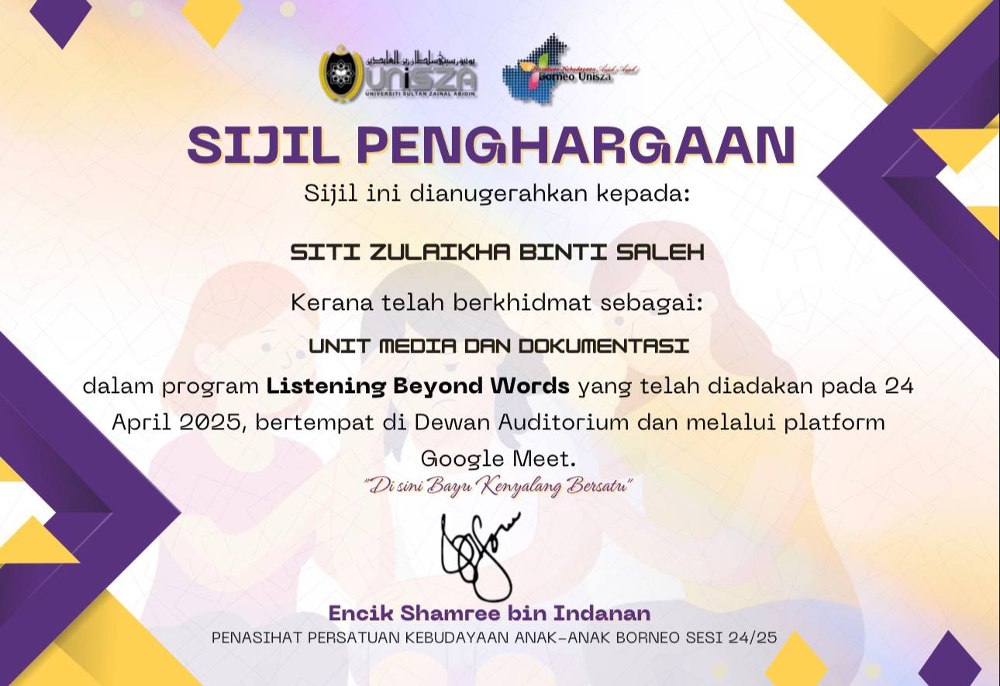

I am Siti Zulaika Saleh, a final-year Computer Science student at UniSZA, majoring in Computer Network Security. I am passionate about wireless network security, intrusion detection systems, network simulation, and cybersecurity.
A Network Security Analyst monitors network traffic, detects security threats, analyzes suspicious activities, and helps protect an organization’s network from cyber attacks.
This section compares my current skills with the skills required for a Network Security Analyst role.
| Skill | Current Level | Target Level |
|---|---|---|
| Network Security | 80% | 90% |
| Networking | 80% | 90% |
| Wireshark | 75% | 90% |
| Linux | 70% | 85% |
| NS-3 Simulation | 75% | 90% |
| C++ | 65% | 80% |
| Python | 60% | 80% |
| Security Analysis | 70% | 90% |
| Skill | Current Level | Target Level |
|---|---|---|
| Communication | 85% | 95% |
| Teamwork | 90% | 95% |
| Leadership | 75% | 90% |
| Problem Solving | 80% | 95% |
| Time Management | 75% | 90% |
| Willingness to Learn | 95% | 100% |
Overall, I possess strong foundational knowledge in networking and cybersecurity. However, continuous improvement is needed in Linux, Python, and Security Analysis to meet industry expectations for a Network Security Analyst role.
My development plan focuses on improving networking, cybersecurity, and practical technical skills to prepare myself for a future role as a Network Security Analyst.

To strengthen networking knowledge and understand routing, switching, and network configuration.
To improve cybersecurity fundamentals, threat detection, and security best practices.
To improve packet analysis, traffic monitoring, and network troubleshooting skills.
To improve network simulation, wireless network analysis, and cybersecurity testing skills.

Internet of Things (IoT) Project
This section shows my certificates, project evidence, and learning activities related to computer network security.

This topology was developed using NS-3 and NetAnim to simulate a wireless network environment consisting of an access point, legitimate users, and attackers.

This result table shows the performance evaluation of the proposed security mechanism based on Packet Delivery Ratio (PDR), Throughput, Average Delay, and Packet Loss Ratio.

The graphs present a comparative analysis of Packet Delivery Ratio (PDR), Throughput, Average Delay, and Packet Loss Ratio across the three security scenarios.



Sabah Net Sdn. Bhd.
I want to work at Sabah Net because the company is involved in networking and ICT services, which match my interest in computer network security.
Network Security Analyst
RM3,000 – RM4,000 per month
Basic knowledge in networking, NS-3 simulation, Wireshark, cybersecurity fundamentals, and strong willingness to learn.
I am responsible, hardworking, adaptable, and able to work well in a team. My academic background and FYP experience have strengthened my technical skills.
To become a Network Security Analyst and gain professional certifications such as CCNA and Security+.